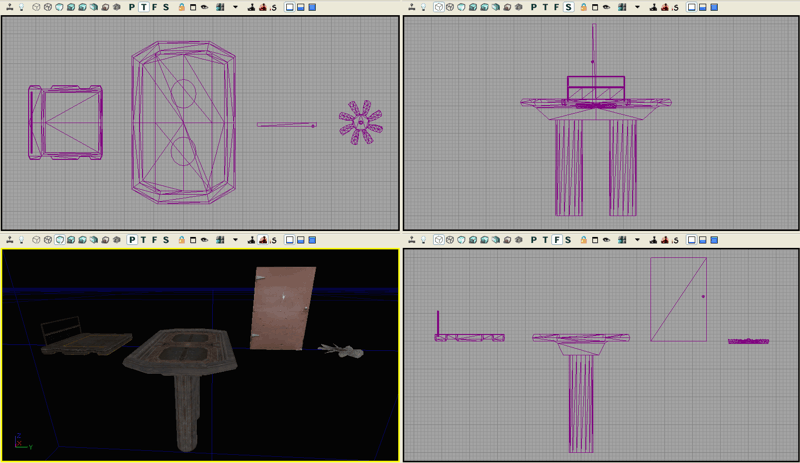
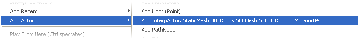
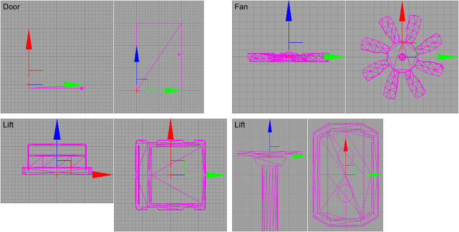
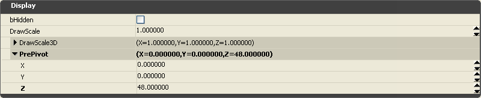
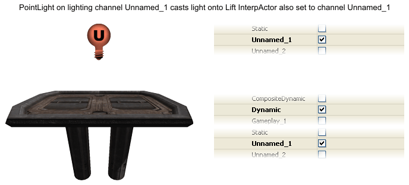
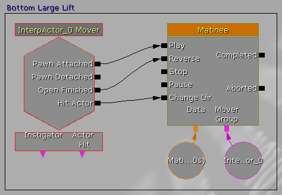

UDN
Search public documentation:
UsingInterpActors
日本語訳
中国翻译
한국어
Interested in the Unreal Engine?
Visit the Unreal Technology site.
Looking for jobs and company info?
Check out the Epic games site.
Questions about support via UDN?
Contact the UDN Staff
中国翻译
한국어
Interested in the Unreal Engine?
Visit the Unreal Technology site.
Looking for jobs and company info?
Check out the Epic games site.
Questions about support via UDN?
Contact the UDN Staff
UE3 Home > Kismet Visual Scripting > Using InterpActors
UE3 Home > Matinee & Cinematics > Using InterpActors
UE3 Home > Cinematic Artist > Using InterpActors
UE3 Home > Matinee & Cinematics > Using InterpActors
UE3 Home > Cinematic Artist > Using InterpActors
Using InterpActors
Overview
For those who are familiar with previous Unreal Engines, the InterpActor is Unreal Engine 3's Mover. Any standard StaticMesh can be used as an InterpActor. When inserted into a map, the InterpActor renders the same as a standard StaticMesh with the exception of its magenta (violet) wireframe color in the orthogonal viewports. It is also moved, scaled and rotated in the editor in a similar fashion to the StaticMesh actors.
A variety of InterpActors:  Inserting an InterpActor InterpActor's are inserted into the map using a similar method to StaticMeshes. - Make sure that the Drag Grid is currently enabled and set to a Drag Grid Size of between 4 and 32
- Select the desired StaticMesh in the Generic Browser dialog
- Right-click in one of the viewports to display the pop-up menu
- Choose the "Add Actor" menu item to display its fly-out menu
- Then click on the "Add InterpActor: StaticMesh <selected static mesh name>" menu item to insert the InterpActor The InterpActor will look identical to an inserted StaticMesh version with the exception that its wireframe color will be magenta instead of cyan.  InterpActor Origin and Pivot The basing location and pivot center-of-rotation for InterpActors is based on the StaticMesh's origin or pivot point, so it is imperative to create all mesh models that will be used as InterpActors with their pivot in the appropriate basing and pivot center of the mesh. For example, most doors will have their pivot on one side corner where the door hinge would normally reside, lift platforms will have their pivot at their base-center, and exhaust fans will have their pivot in the center hub of the blades. The following StaticMesh wireframe images show the common pivot point for each of these InterpActor types:  If a StaticMesh has been designed where its pivot is in the incorrect location for use as an InterpActor, the pivot location can be modified for the current inserted instance of the object by modifying its Display.PrePivot properties. If the pivot offset is already known, simply enter the X,Y,Z values into the properties. If the offset is not known, then use the editor measure tool (Ctrl + Mouse Middle Button) to determine the offset amount or simply enter values in until the InterpActor mesh lines up with its pivot as desired.  Once the InterpActor is inserted, specific properties and possibly Kismet and Matinee must be set up to make the actor move as desired. See the specifics for a variety of common InterpActor types in the topics below.
Lighting InterpActors
With six user-defined Unnamed_* lighting channels, there is usually more than enough channels for custom lighting needs. The downside to using the user-defined lighting channels are possible issues with matching the rest of the scene static lighting if it is complex, and only six Unnamed channels are available. 
Common InterpActor Properties
Doors
Elevators
Lifts
2. Insert the InterpActor into the map and position it where desired.
3. Open the actor properties dialog and set the following values:
- Collision.BlockRigidBody = True.
This is so that players and AI can collide and/or stand on the InterpActor. This defaults to False. - Collision.CollisionType = COLLIDE_BlockAll.
So that the InterpActor can collide with other actors and to cast shadows.
- Display.DrawScale and Display.DrawScale3D.X,Y,Z as desired.
For the size of the InterpActor. All of these default to 1.0.
- DynamicSMActor.LightEnvironment.DynamicLightEnvironmentComponent.AmbientGlow.A,R,G,B as desired.
For additional brightening of the InterpActor. These default to A = 1.0, R = 0.0, G = 0.0, B = 0.0. - DynamicSMActor.LightEnvironment.bCastShadows = True.
If you do not want the InterpActor to cast shadows then set this to False. This defaults to True. - DynamicSMActor.LightEnvironment.LightEnvironmentComponent.bEnabled = False.
Set this true if you are using a LightEnvironment with this InterpActor.
- InterpActor.bContinueOnEncroachPhysicsObject = True.
If the InterpActor is to continue even if a PHYS_RigidBody actor is near. This defaults to True. - InterpActor.bDestroyProjectilesOnEncroach = True.
If the InterpActor is to blow up projectiles that collide with it. This defaults to True. - InterpActor.bStopOnEncroach = True.
If the InterpActor is to stop when it gets close to another actor. This defaults to True.
- Movement.Location as desired to place the InterpActor in the map.
- Movement.Physics = PHYS_Interpolating.
- Movement.Rotation.Pitch,Roll,Yaw as desired to orient the InterpActor in the map.
- Select the InterpActor.
- Start Unreal Kismet by clicking on the "K" toolbar button.
- Right-click in the Kismet dialog to display the popup menu, choose "New Event Using InterpActor_x", and then choose the "Mover" item. This creates a default Lift mover style Kismet template.
- Add a new "Comment (wrap)" to Kismet, give it a name such as "Left Lift" and wrap that around the sequence.
The Kismet Mover Event is constructed of the InterpActor Mover and a Matinee.
- When the Pawn (player or ai) steps on the Lift, it causes a Mover "Pawn Attached" event that triggers the Matinee "Play", which starts playing the Matinee Movement track (the Matinee track will be discussed below).
- When the Mover has completed its open sequence, ie. moving from KeyFrame 0 to the last KeyFrame, it causes a Mover "Open Finished" event that triggers the Matinee "Reverse", which then plays the Matinee Movement track in reverse.
- The Mover "Hit Actor" event, which occurs if the Mover bumps a Pawn, triggers a Matinee "Change Dir" that causes the Matinee track to change direction amd move the Mover back away from the Pawn.  5. Create the Matinee values for the Lift animation:
- Make sure the InterpActor is still selected in the map viewport.
- Double-click the Matinee device or right-click and choose "Open UnrealMatinee" to display the Matinee Editor dialog.
- Note the MoverGroup item in the center panel, open it up to show the Mover track beneath it.
- Click on the "Toggle Snap" button if it is not on, set it to 0.1s snaps (1/10th of a second).
- Click on the "Add Key" button on the dialog top left (not to be confused with the same icon button for "Toggle Snap").
This will add a keyframe at time position 0.00. This will be the lowered resting position of the Lift. - Drag the black slider bar to 0.5s, click on "Add Key" again to add a second keyframe here. The snap will put it on 0.5s if it is off a bit.
- Click on the small orange triangle/pyramid on the second keyframe, the Matinee will show "OKey1" and the editor will show "ADJUST KEY 1".
- Move the InterpActor to the location for this KeyFrame. This will be the raised position of the Lift.
- Drag the pink Time End marker to the time of 1.0s. This determines the length of time that the Lift stays in the raised position.
- You can now drag the time slider to see the movement.
- Close Matinee and UnrealKismet.
Rotators (fans, etc.)
2. Insert the InterpActor into the map and position it where desired.
3. Make sure that the actor pivot location is correct for where the rotator spins.
4. Open the actor properties dialog and set the following values:
- Collision.BlockRigidBody = False.
If the InterpActor is to collide with rigid body actors then set this to True. This defaults to False. - Collision.CollisionType = COLLIDE_BlockAll.
If the InterpActor is to collide with other actors and to cast shadows.
- Display.DrawScale and Display.DrawScale3D.X,Y,Z as desired.
For the size of the InterpActor. All of these default to 1.0.
- DynamicSMActor.LightEnvironment.DynamicLightEnvironmentComponent.AmbientGlow.A,R,G,B as desired.
For additional brightening of the InterpActor. These default to A = 1.0, R = 0.0, G = 0.0, B = 0.0. - DynamicSMActor.LightEnvironment.bCastShadows = False.
If you want the InterpActor to cast shadows then set this to True. This defaults to True. Depending on the InterpActor design and its use in the map, the dynamic shadows may not look appropriate. - DynamicSMActor.LightEnvironment.LightEnvironmentComponent.bEnabled = False.
Set this true if you are using a LightEnvironment with this InterpActor.
- InterpActor.bContinueOnEncroachPhysicsObject = True.
If the InterpActor is to continue even if a PHYS_RigidBody actor is near. This defaults to True. - InterpActor.bDestroyProjectilesOnEncroach = True.
If the InterpActor is to blow up projectiles that collide with it. This defaults to True. - InterpActor.bStopOnEncroach = True.
If the InterpActor is to stop when it gets close to another actor. This defaults to True.
- Movement.Location as desired to place the InterpActor in the map.
- Movement.Physics = PHYS_Rotating, so that the InterpActor always rotates on its origin pivot during the game.
- Movement.Rotation.Pitch,Roll,Yaw as desired to orient the InterpActor in the map.
- Movement.RotationRate.Yaw as desired to specify the speed at which the InterpActor rotates.
Higher values are faster speeds. A value of 300 to 500 is common for exhaust fans.